Sanin Inu is a protest against Centralization. Moonoshi developed $SANI as an experiment in decentralization on the basis of the Ethereum blockchain. Shiba Inu killer – was just the beginning. Sanin Inu was born to change the
balance of power in the world order. The recent political and economic crises force people to look for new opportunities to gain freedom and for a chance to exist in it. $SANI is an absolutely secure view for everyone,
aimed at building a common future world, for which there’s a technological opportunity right now. Sanin Inu – belongs to humankind.
The most secure ERC20 Token.
Sanin inu
the centralization
killer
the centralization
killer
Sanin inu
the centralization
killer
the centralization
killer
SANIN INU = SAFE
ZERO TAX
Sanin Inu charges no taxes on purchase/sale/transfer. $SANI doesn’t earn money from its community – forget everything you know about tokenomics. Developers must provide a product that people will use, but not make money on purchases and sales. Sanin Inu is a greed-free place.
EtherscanALL LP Tokens – Burned
Blocked liquidity gives dishonest developers a chance to maneuver. Why give any time if you want to change the world? Burn it. No Team or Pre-sale tokens. Any balance can be broken for unscrupulous benefit, can’t it? No. The balance can’t be broken if there’s no need to look for it. All are equal. This’s equality as it should be.
Liquidity burnContract Renounced
All the above-listed advantages will remain unchanged forever, since the contract has been renounced. Sanin Inu will remain as it was intended and implemented forever. This is the very island of security in Crypto. Forget about scams. You’ve just found your future home. The home of decentralization.
RenounceHOW TO BUY
1 Create MetaMask wallet
Create a MetaMask Wallet using either a desktop computer or an iOS/Android mobile device. That will allow you to buy, sell, send, and receive $SANI.
2 Send ETH to your wallet
You can buy Ethereum (ETH) directly on MetaMask or transfer it to your MetaMask Wallet from exchanges like Coinbase, Binance, etc. Make sure to use the ERC-20 network when transfering ETH.
3 Connect your wallet to Uniswap
Access your wallet to Uniswap by clicking “Connect to a wallet” and selecting MetaMask.
4 Set low slippage
Avoid getting front run and set slippage to 0.01% - 0.50%.
5 Swap ETH for SANI
You can start swapping as soon as you have ETH available! Press ‘Select a token’ and enter the token address or search for it on the tokens list. You are now ready to swap.
A new look at decentralization
-01
Centralization is hunting for your money. Baseless speculations allow Centralized groups of individuals to enrich themselves at the expense of ordinary people. They take away your present under the pretext of the future.
They
lure you into their schemes under the pretext of mass adaptation. Centralization is a pandemic.
Decentralization will really become possible only if the underlying motives are selfless. This applies both to those who
created the vision and to those who accepted it. Together we can change the world, Sanin Inu is your right choice.
Sanin Inu is your new future.

A new look at the world
-02
Many believe that decentralization means separation. This is absolutely not the case. Decentralization is what will unite the world in the future. Right now, Centralization considers people a source of new income. Day by day, corporations are getting richer, feeding on our energy and taking away everything we have. Our ideas, thoughts, freedom, and time. If you want a better world for yourself and your children, Sanin Inu is your right choice.
Sanin Inu is your new culture.
A new look at blockchain
-03
Day by day, technologies are getting more and more complicated. The blockchain technologies lose their true value in developers’ hands. Developers must improve and create technologies, and people must decide how these technologies
will be used in real life. Blockchain is great in itself.
Now it’s the time when blockchain can enter our familiar world and change it, Sanin Inu is your right choice.
Sanin Inu is your new home.
